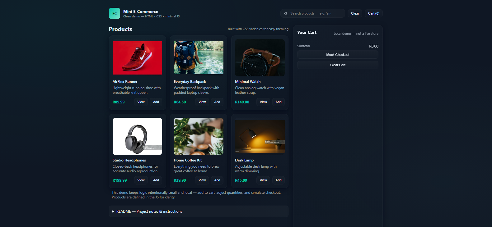
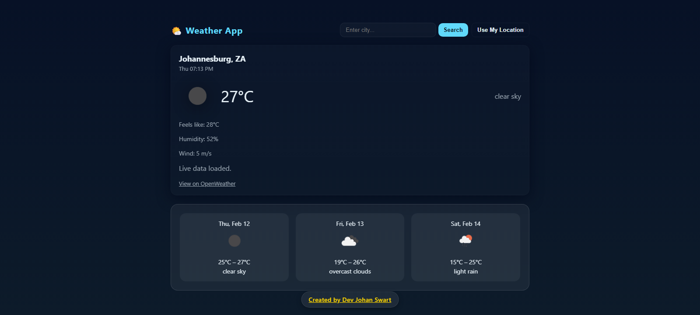
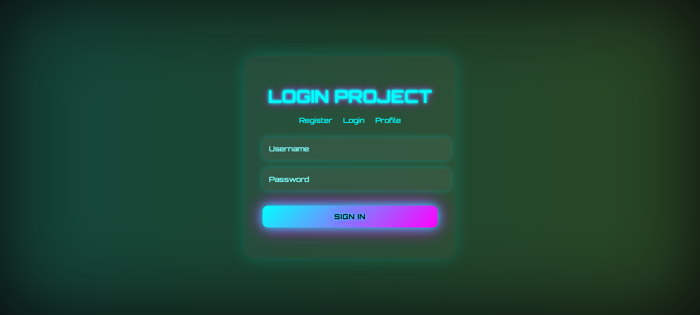
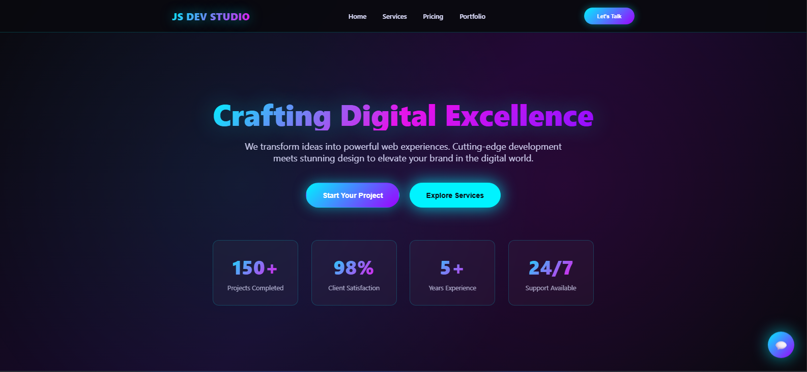
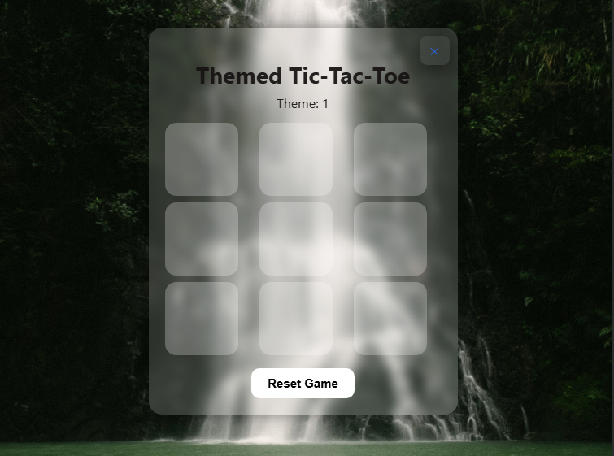

Selected Projects :
E-commerce Project
Multi-page e-commerce project with product filtering, cart functionality, and mobile-first design.
Weather Application
API-driven weather application featuring asynchronous data fetching, dynamic UI rendering, loading states, and error handling. Designed with responsive layout principles and clean state-driven updates.
Note: Hosted on Render free tier — initial load may take a few seconds due to cold start
Authentication Flow UI Simulation
Login interface simulation showcasing form validation, state handling and structured authentication flow logic.
Landing Page Project
Fully responsive landing page with clean design and smooth animations.
Tic Tac Toe - Component State Management Demo
State-driven game logic demo showcasing conditional rendering, win-state evaluation algorithms and UI state transitions.
OTP Generator

Secure one-time password generator demonstrating logic handling, input validation and modular JavaScript structure.